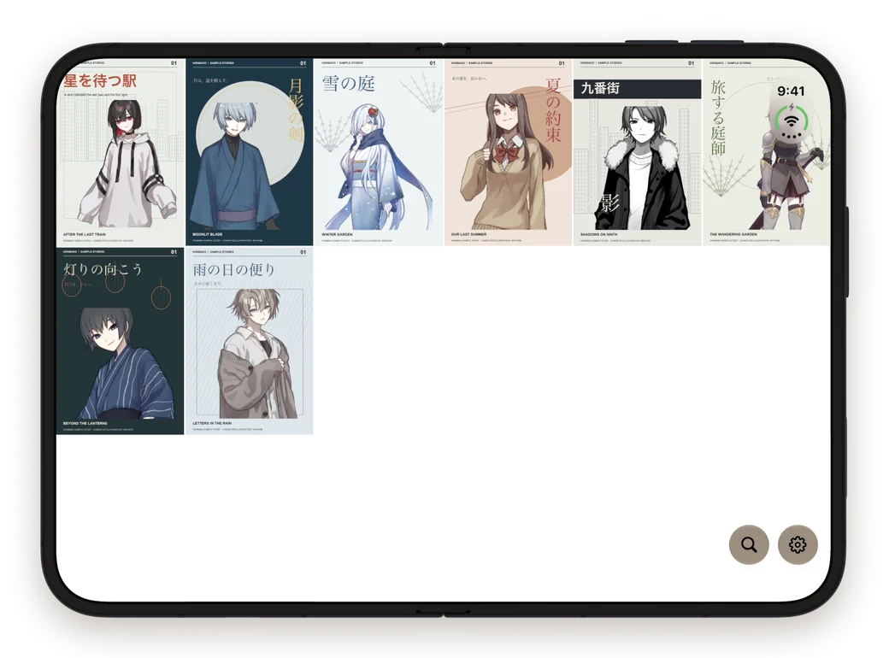
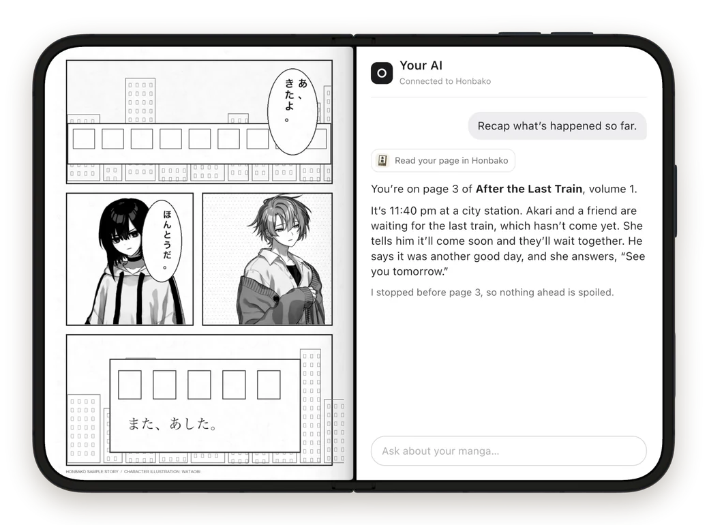
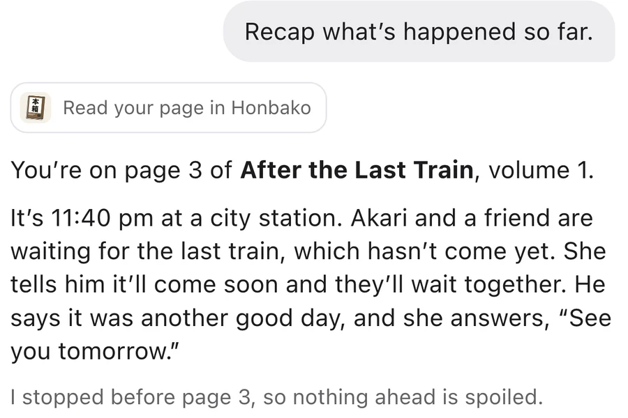
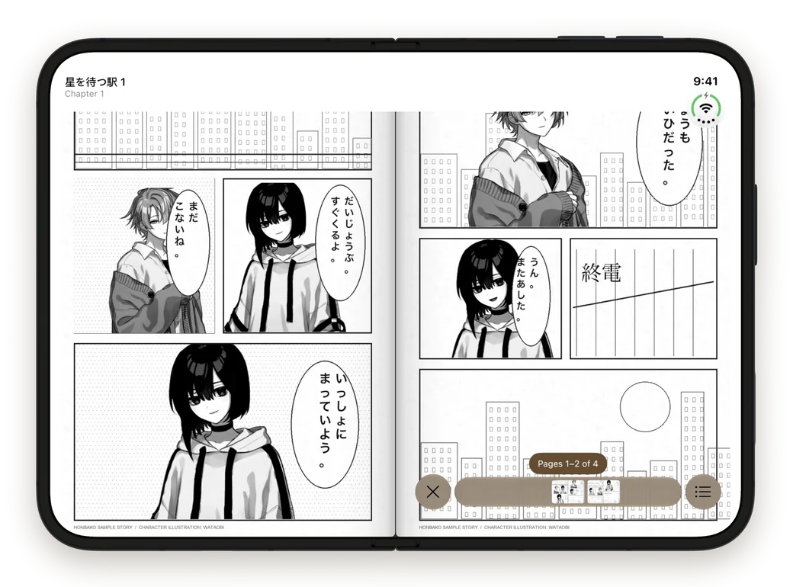

Read from anywhere
Import CBZ and ZIP files, connect Komga, Kavita or Suwayomi, or add extensions.

A manga reader for iPhone Duo, iPhone and iPad.
Open it and read a two-page spread, with real page turns.
Import CBZ and ZIP files, connect Komga, Kavita or Suwayomi, or add extensions.

Connect ChatGPT, Claude or Grok through Honbako’s MCP server. Ask where you left off, or for a recap of the story so far. You choose what it can see.


Romaji over the dialogue, and Read This Phrase for any line.

Fold it like a book and the outside shows the cover of what you’re reading.